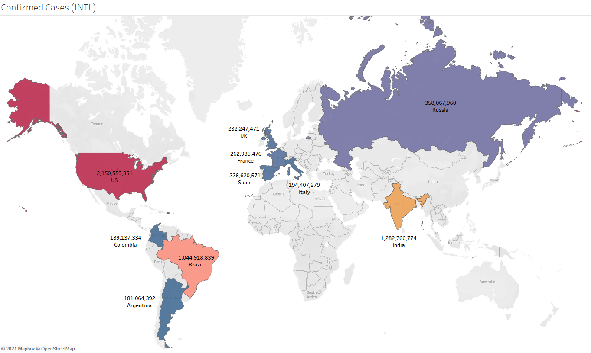
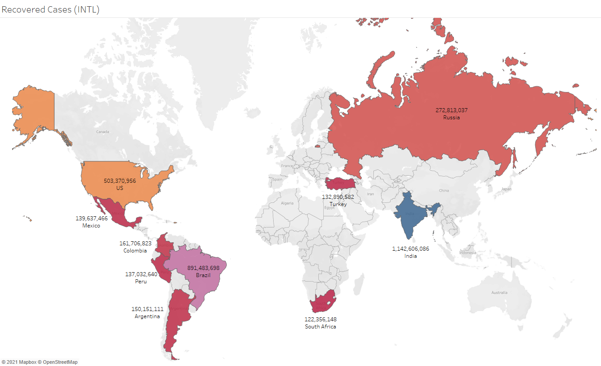
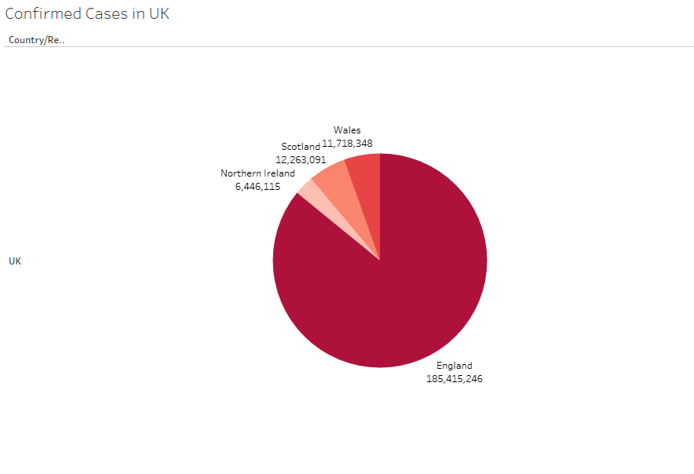
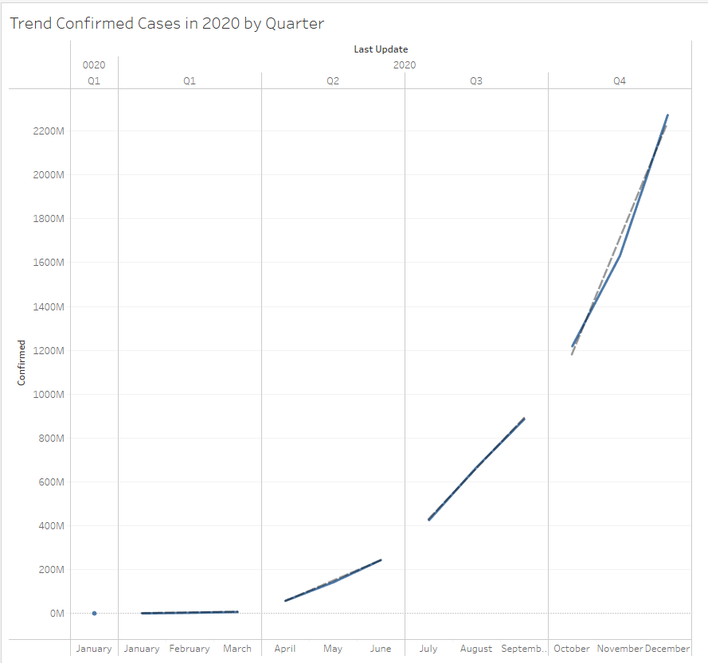
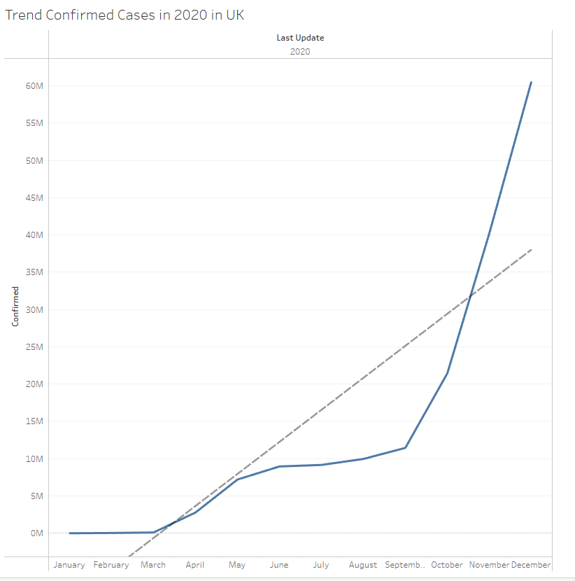

COVID-19 Data Analysis
Exploring a dataset relating to COVID-19 Cases
In this project, I have used Tableau to explore and visualise insights into COVID-19 cases around the world up to February 2021.
Data Source
Highest Confirmed Cases (International)

Highest Recovered Cases (International

Confirmed Cases across the UK

Trend of Confirmed Cases throughout 2020

Trend of Confirmed Cases in the UK throughout 2020
